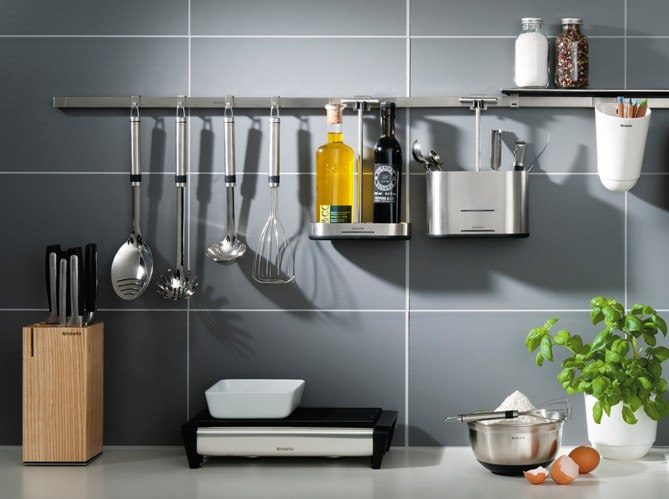
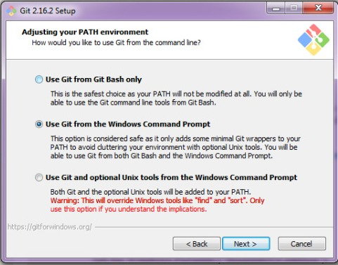
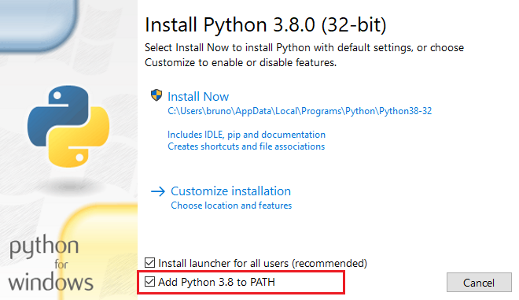
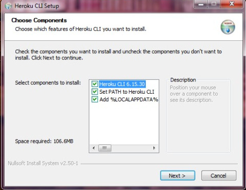

🔨 Escolhendo as melhores ferramentas

🍴 Um bom chef escolhe as melhores ferramentas
Uma analogia que normalmente faço é que programar é igual a cozinhar, você deve escolher as melhores ferramentas. Um bom chefe gasta algumas horas escolhendo quais acessórios serão necessários para a produção do prato e já deixa na bancada de forma que não precise ficar procurando enquanto está produzindo seu prato.
Na programação também é assim, escolhemos as ferramentas necessárias para desenvolver, testar e colocar no ar nosso sistema.
Para este curso foram escolhidas algumas ferramentas e a partir de agora iremos ver como instalá-las e configurá-las para que daqui pra frente não tenhamos que parar para fazer instalação de mais uma ferramenta.
As ferramentas foram escolhidas pensando na didática do aluno assim como compatibilidade de sistemas operacionais e também por serem as principais escolhas no mercado de trabalho.
Siga os passos de acordo com o seu sistema operacional para cada ferramenta. Tenha sempre certeza de que a ferramenta está instalada e funcionando.
🔧 Git
O que é?
Git é uma ferramenta para controle de versão livre e de código aberto, construído para lidar com projetos pequenos e grandes de maneira rápida e eficiente.
Para que serve?
Com certeza você já escreveu um arquivo, mais tarde troca algumas coisas e salva como final. Mais tarde ou no outro dia você decide fazer mais mudanças e chama de "agoravai" e quando menos percebe já tem um monte de arquivos e talvez nem se lembre mais qual a última versão.
É para gerenciar alterações feitas no projeto durante o tempo que serve esta ferramenta. Durante o curso vamos salvando cada progresso feito sem precisar de ter várias cópias do mesmo arquivo.
Como instalar
O pacote git se encontra na central de programas.
sudo apt install git
Baixe a última versão neste site. Deixe as opções já marcadas por padrão, exceto a mostrada abaixo que deve ser ajustada.

O pacote git faz parte do kit de desenvolvimento Xcode. Para instalar, basta tentar usar o comando pela primeira vez. Opcionalmente, você pode entrar na App Store e procurar por Xcode.
git --help
Vamos verificar se deu tudo certo?
Abra um terminal e digite git --version.
A saída deverá ser similar a apresentada abaixo:
$ git --version
git version 2.36.1
Clique no botão iniciar, busque por powershell e abra o programa Windows PowerShell. Agora digite git --version.
A saída deverá ser similar a apresentada abaixo:
$ git --version
git version 2.38.0.windows.1
Abra um terminal e digite git --version.
A saída deverá ser similar a apresentada abaixo:
$ git --version
git version 2.36.1
🐍 Python
O que é?
Python é uma linguagem de programação com foco em legibilidade e produtividade, criada para escrever código bom e fácil de manter de maneira rápida.
Para que serve?
É uma linguagem bastante versátil, e hoje em dia é amplamente utilizada para escrever sistemas web, integrações entre sistemas, automatizar tarefas e muitas outras coisas.
Como instalar
Versões mais atuais do ubuntu já vem com o python 3 instalado, e inclusive, a partir da versão 17.10, essa passa a ser a versão padrão do sistema.
Caso python 3 não esteja instalado, utilize sudo apt install python3.
Baixe o instalador de acordo com o seu computador caso seja 64 bits ou 32 bits.
Após baixar o instalador fique atento para selecionar a opção marcada na figura abaixo.

Para continuar a intalação clique em "Install Now".
Assim como o Ubuntu (e outros sistemas Unix e "Unix-Like")o Mac OS também já vem com uma versão no Python instalada. Porém, a versão disponível por padrão no sistema está sempre muito defasada em realação a última versão estável disponível. Por exemplo, na data atual a versão 3.8 já foi lançada para o público, porém o sistema ainda utiliza a versão 2.7. Para instalar a versão mais atual, a maneira convencional é utilizar o gerenciador de pacotes Homebrew. Clique no link e veja como instalá-lo com um simples comando! Com ele instalado, basta utilizar o comando: brew install python no seu terminal.
Vamos verificar se deu tudo certo?
Abra um terminal e digite python3 --version.
A saída deverá ser similar a apresentada abaixo:
$ python3 --version
Python 3.10.4
Clique no botão iniciar, busque por powershell e abra o programa Windows PowerShell. Agora digite python --version.
A saída deverá ser similar a apresentada abaixo:
$ python --version
Python 3.10.7
Abra um terminal e digite python3 --version.
A saída deverá ser similar a apresentada abaixo:
$ python3 --version
Python 3.10.4
Warning
A versão necessária neste curso é superior a 3.7 devido aos recursos que utilizaremos.
🚚 Pip
O que é?
Pip é o gerenciador de pacotes do python. É um cliente de linha de comandos utilizado para controle das depêndencias do projeto.
Para que serve?
Utilizaremos o pip para controlar as versões das bibliotecas utilizadas para desenvolvimento do sistema. O pip nos permite baixar uma versão específica de uma biblioteca como por exemplo python3 -m pip install fastapi==0.43.0.
Como instalar
Esta ferramenta não vem por padrão no sistema operacional ubuntu e pode ser instalada utilizando o comando sudo apt install python3-pip.
Não será necessário a instalação pois o mesmo já vem com o instalador da linguagem.
Se você instalou o Python utilizando o Homebrew, o pip já foi instalado em seu sistema.
Vamos verificar se deu tudo certo?
Abra um terminal e digite python3 -m pip --version.
A saída deverá ser similar a apresentada abaixo:
$ python3 -m pip --version
pip 22.0.4 from /usr/lib/python3.10/site-packages (python 3.10)
Clique no botão iniciar, busque por powershell e abra o programa Windows PowerShell. Agora digite python -m pip --version.
A saída deverá ser similar a apresentada abaixo:
$ python -m pip --version
pip 22.2.2 from C:\Users\User\AppData\Local\Programs\Python\Python310\lib\site-packages\pip (python 3.10)
Abra um terminal e digite python3 -m pip --version.
A saída deverá ser similar a apresentada abaixo:
$ python3 -m pip --version
pip 22.0.4 from /usr/lib/python3.10/site-packages (python 3.10)
📚 venv
O que é?
Responsável por criar ambientes virtuais Python e provê um isolamento dos pacotes instalados e suas respectivas versões.
É um cliente de linha de comando que auxilia na separação de ambientes para diferentes projetos.
Para que serve?
Iniciamos um projeto que tem uma biblioteca na versão 1.4, e de repente, um novo projeto é iniciado na versão 2.0. O que fazer? Será que são compatíveis? E se eu atualizo o sistema e a versão antiga para de funcionar?
É onde o venv entra, ele serve para isolar ambientes entre projetos, ou seja, eu consigo ter dois projetos rodando, em dois ambientes diferentes, com versões diferentes da mesma biblioteca.
Como instalar
Versões atuais do ubuntu já vem com python 3 instalado. Para as mais antigas utilize o comando sudo apt install python3-venv.
Não será necessário a instalação pois o mesmo já vem com o instalador da linguagem.
Normalmente o venv é instalado junto com o Python e com o pip ao utilizar o Homebrew. Se o comando de verificação (logo abaixo) não funcionar, você pode instalá-lo utilizando o próprio pip com o comando pip install virtualenv
Vamos verificar se deu tudo certo?
Abra um terminal e digite python3 -m venv -h.
Clique no botão iniciar, busque por powershell e abra o programa Windows PowerShell. Agora digite python -m venv -h.
Abra um terminal e digite python3 -m venv -h.
A saída deverá ser similar a apresentada abaixo:
$ python -m venv -h
usage: venv [-h] [--system-site-packages] [--symlinks | --copies] [--clear] [--upgrade] [--without-pip]
[--prompt PROMPT] [--upgrade-deps]
ENV_DIR [ENV_DIR ...]
Creates virtual Python environments in one or more target directories.
positional arguments:
ENV_DIR A directory to create the environment in.
options:
-h, --help show this help message and exit
--system-site-packages
Give the virtual environment access to the system site-packages dir.
--symlinks Try to use symlinks rather than copies, when symlinks are not the default for the platform.
--copies Try to use copies rather than symlinks, even when symlinks are the default for the platform.
--clear Delete the contents of the environment directory if it already exists, before environment
creation.
--upgrade Upgrade the environment directory to use this version of Python, assuming Python has been
upgraded in-place.
--without-pip Skips installing or upgrading pip in the virtual environment (pip is bootstrapped by default)
--prompt PROMPT Provides an alternative prompt prefix for this environment.
--upgrade-deps Upgrade core dependencies: pip setuptools to the latest version in PyPI
Once an environment has been created, you may wish to activate it, e.g. by sourcing an activate script in its bin
directory.
☁️ Heroku CLI
O que é?
O Heroku é uma plataforma em nuvem como um serviço (PaaS) que suporta várias linguagens de programação usadas como um modelo de implantação de aplicativos da Web.
A CLI é uma interface de linha de comando que serve para facilitar a criação e o gerenciamento de aplicativos direto do terminal.
Para que serve?
Vamos utilizar o heroku para colocar nossa aplicação no ar e se tudo der certo, automatizar este processo. O CLI vai ajudar a fazer isto através do terminal.
Como instalar
Abra um terminal e digite wget -qO- https://cli-assets.heroku.com/install-ubuntu.sh | sh.
Vá no site de download do heroku e baixe o instalador.

Abra um terminal e digite brew tap heroku/brew && brew install heroku.
Vamos verificar se deu tudo certo?
Abra um terminal e digite heroku --version.
Clique no botão iniciar, busque por powershell e abra o programa Windows PowerShell. Agora digite heroku --version.
Abra um terminal e digite heroku --version.
A saída deverá ser similar a apresentada abaixo:
$ heroku --version
heroku/7.60.2 linux-x64 node-v18.0.0
⌨️ VS Code
O que é?
O VSCode é um editor de texto e possui uma excelente extensão para Python que pode ser instalada através da marketplace.
Para que serve?
O plugin de Python para VSCode fornece auto-complete , integração com os linters mais conhecidos, também é uma ferramenta para depuração de código.
Como instalar
O VS Code pode ser baixado no site oficial aqui.
A instalação do _ plugin_ de Python pode ser feita através da marketplace ou através dos comandos abaixo:
Abra o VS Code Quick Open (Ctrl+P) , cole o comando a seguir e pressione enter .
ext install ms-python.python
Vamos verificar se deu tudo certo?
Você pode abrir o VS Code e verificar se o plugin foi instalado com sucesso.
Basta clicar no ribbon "Extensions" ao lado esquerdo da tela, e verificar se a extensão consta listada.
🎉 Parabéns!
Instalamos todas as ferramentas que precisaremos para acompanhar este curso, vamos para o próximo passo!